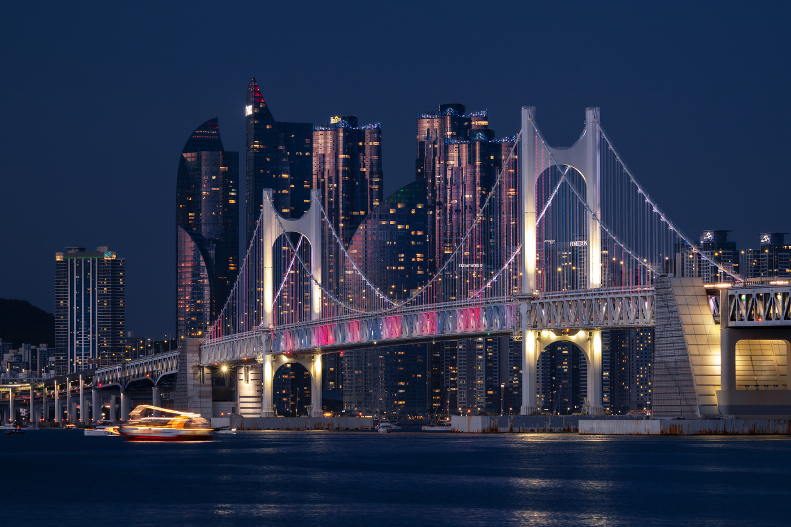
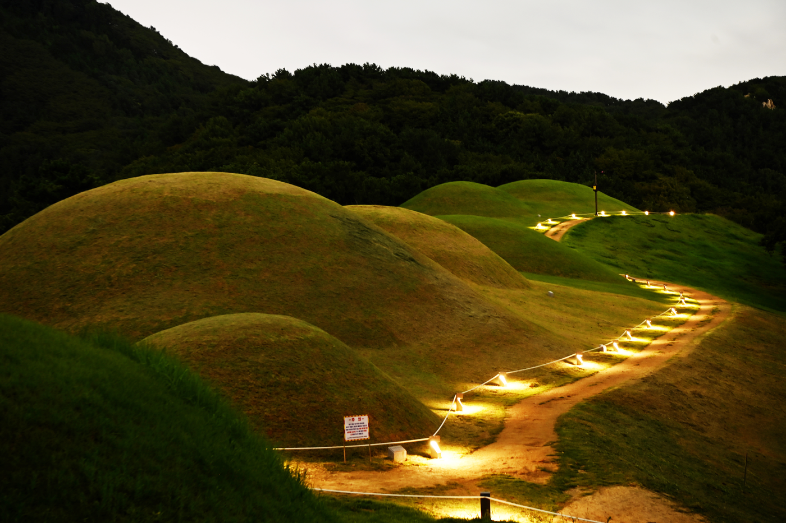
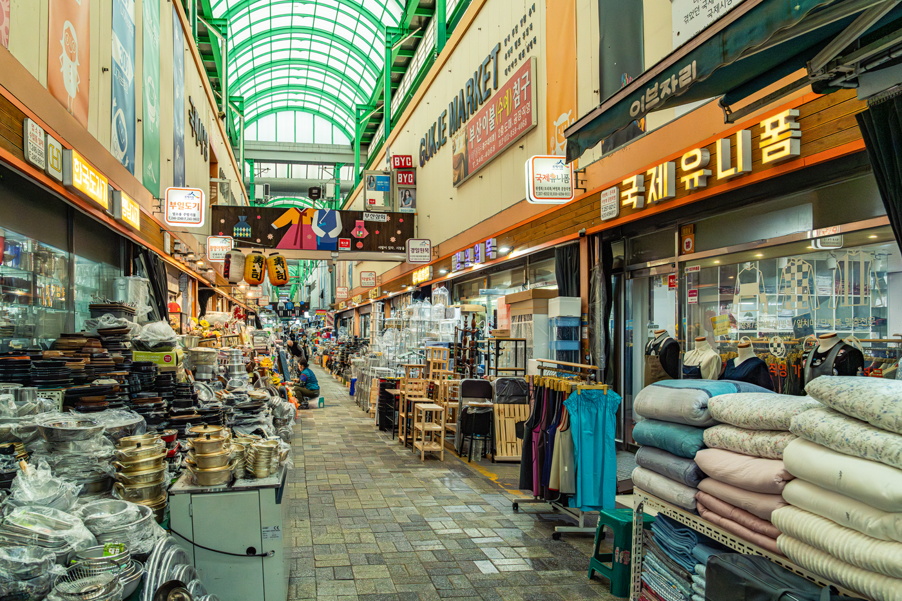

Hello, BusanHello, Busan
광 안 대 교
부산광역시 수영구와 해운대를 잇는
국내 최대 해상 복층 교량으로,
광안리 앞바다의 야경을 책임지는 부산의 대표적인 랜드마크
Hello, BusanHello, Busan
연산동 고분군
5세기 후반 ~ 6세기 전반
부산 연제구 배산 일대 조성된 삼국시대 고분군으로,
부산지역을 다스린 최고 지배층의 무덤(사적 제539호)이며,
대형 봉분과 구덩식덧널무덤 구조에서 고대 토목 기술과 신라 복속 과정을 보여주는 중요한 유적


Hello, BusanHello, Busan
국 제 시 장
1945년 해방 이후
피난민들의 삶의 터전으로 시작되어, 70여 년의 역사를 품고 다양한 수입품, 의류, 먹거리(비빔당면, 꽃분이네)가 가득한 부산을 대표하는 전통시장이자 관광 명소